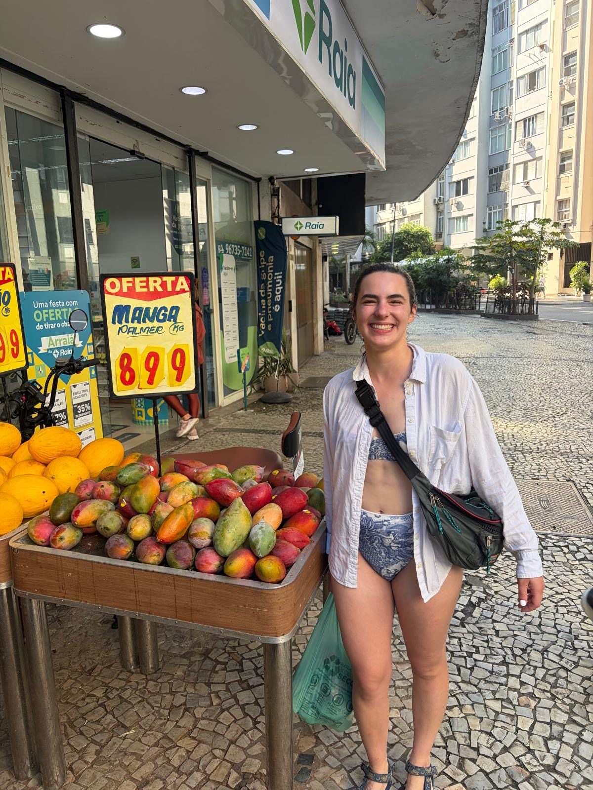
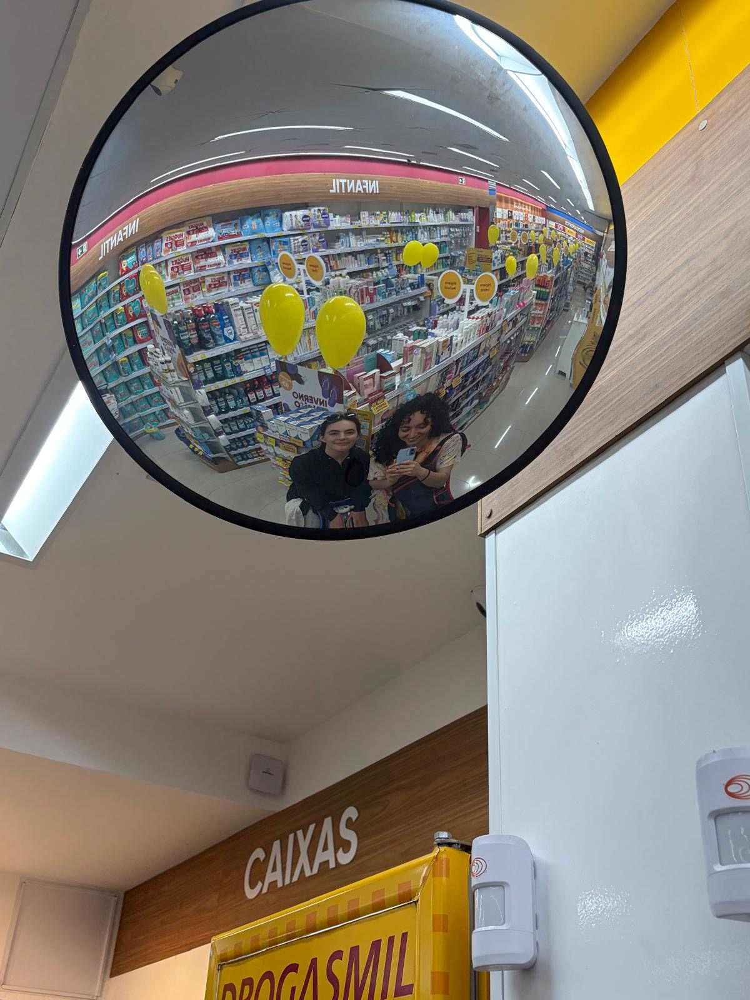
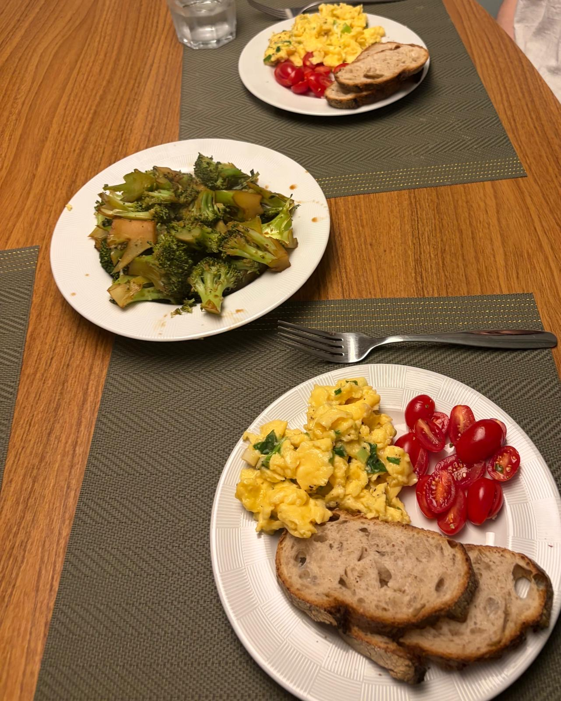
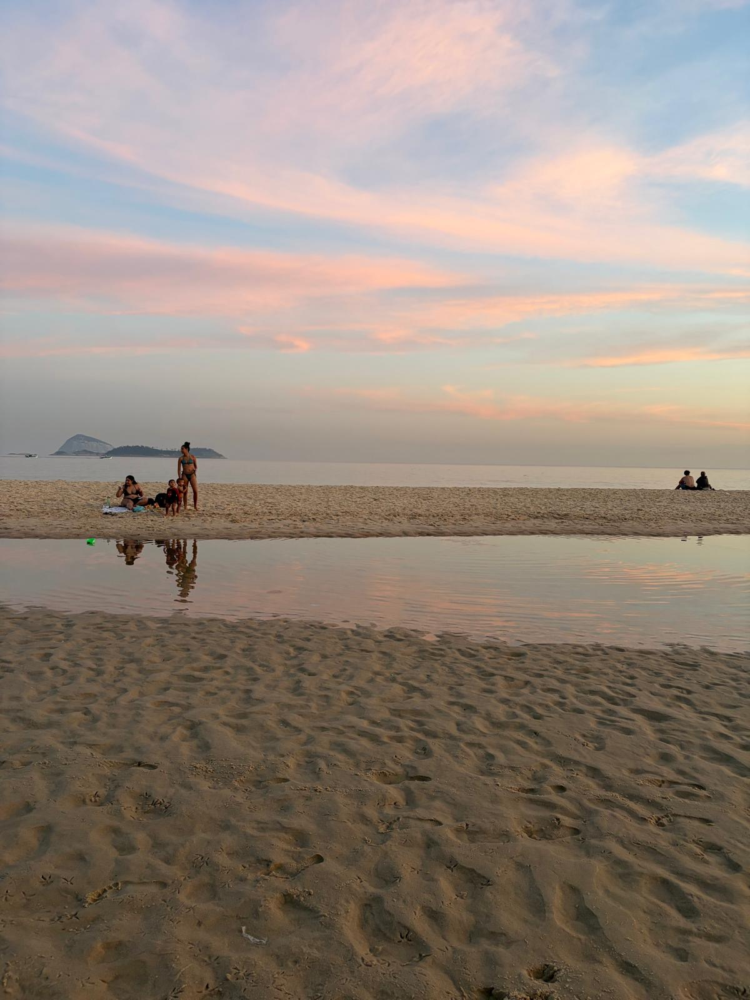

Rio de Janeiro 2026, Days 5-6: Lovely little errands
Hello it's Emily! It's late at night so I'm just going to give some quick anecdotes and pictures!
Karishma and I have taken to visiting the beach every morning for a quick dip.
The water feels cold at first but it's very pleasant to swim in.
I always love to see dogs having fun :)
After our dip, we do some errands, hitting fruit markets and bakeries. I've been eating at least three pãos de queijo a day and I couldn't be happier.
Big ahh avocado. It still hasn't ripened all the way but maybe we'll be able to dip in tomorrow.
I've been embracing the beach culture and wearing my bathing suit to run the errands:

Unfortunately, I also decided to wear my bikini into a bank to take some cash out. I gather that I was transgressing norms due to the vague muttering of "praia" and disapproving looks from some old ladies in the bank.
Oops!

We moved to a new Airbnb today where we'll be staying for the rest of the trip. This apartment is in Ipanema and a little farther away from the beach but it totally makes up for it because it's so beautiful and spacious!
We're taking interior design notes.
The three of us had a schedule in college where we would cook for each other twice a week. It was quite symbiotic, allowing us to have delicious homecooked meals without having to cook every night.
We've been reminiscing about the best meals we cooked each other and Karishma treated us to dinner tonight. We were all pretty tired, so this was very much appreciated.
Vacations with the three of us can already be pretty exhausting, but add on work to that and you get three sleepy girls.

These are probably the best eggs Lena and I have ever had, I kid you not.
Karishma put garlic and scallions in them and cooked them over low heat to this lovely texture. We miss getting to eat Karishma's cooking!

Karishma has yet to miss sunset on the beach, accompanied by me yesterday and Lena today.
Let me leave you with a little story because I know the blog readers love when bad things happen to me. The other day, we were in the back of an Uber chatting away without a care in the world.
We started talking about getting sick on vacation at which point I recounted my horrendous stomach bug in the Canary Islands (iykyk). I told them about my bodily functions in excruciating detail as I am wont to do.
The conversation shifted as we looked out the window and tried to remember the name for a bicycle that more than one person can ride. "Those are called tandem bikes!" our Uber driver piped up helpfully.
I just wanted to roll out of the car-- I never would have discussed diarrhea if I thought there was any chance the driver spoke English. Let alone good enough English to know the word for tandem bike!
If I were the Uber driver I would have saved my poor passenger the embarrassment and pretended not to speak English. But this guy really wanted to make it clear that he heard and understood everything I said.
That illness in Spain really is the gift that keeps giving...
Distance walked across the past two days: 9 miles
New Portuguese words:
ja está = that's it
e = and
para mim = for me
não precisa = no need
Até logo,
Emily "I pound the pão" Bregou
Lena "I'm sorry I didn't nourish the collective" Armstrong
Karishma "Shhhhh you're being dramatic" Lachhwani